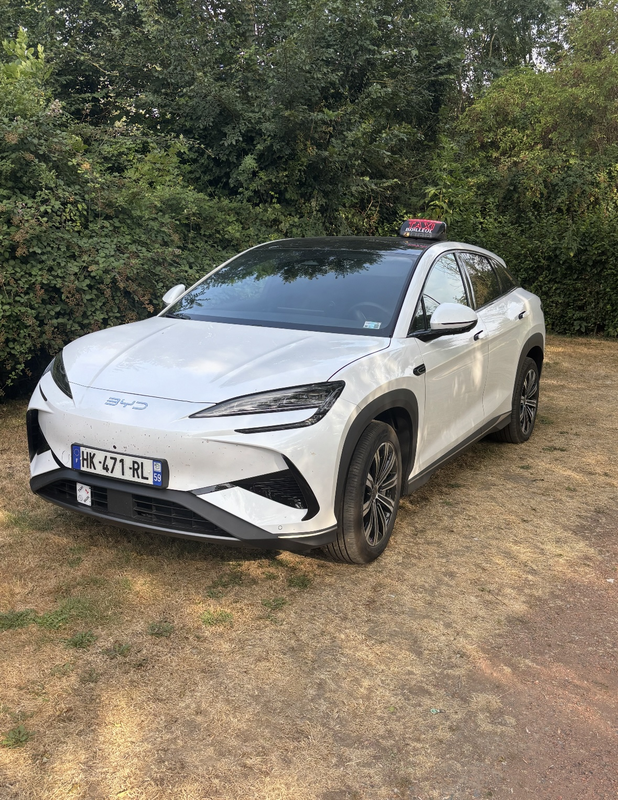

Transport médical
Transport conventionné CPAM vers hôpitaux, cliniques, cabinets et rendez-vous médicaux.
Transport médical conventionné CPAM, trajets professionnels, loisirs, gare, aéroport et toutes distances.

Réservation simple par téléphone pour vos déplacements à Bailleul et au-delà.
Transport conventionné CPAM vers hôpitaux, cliniques, cabinets et rendez-vous médicaux.
Déplacements vers les gares et aéroports, avec prise en charge sur réservation.
Trajets locaux, régionaux et longues distances pour particuliers et professionnels.
Un service pratique pour vos sorties, événements et rendez-vous professionnels.
Un appel suffit pour organiser votre trajet. Le service est disponible de jour comme de nuit, sur réservation.
Réservation rapide
Par téléphone au 06 33 64 38 36.
Transport médical CPAM
Pour vos déplacements médicaux conventionnés.
Trajets 24h/24, 7j/7
Selon vos besoins et votre réservation.
Départs et arrivées à Bailleul, ainsi que trajets vers Lille, Dunkerque, Saint-Omer, les gares, aéroports et autres destinations sur réservation.
Contactez directement Jo le Taxi pour réserver ou demander un devis.
06 33 64 38 36